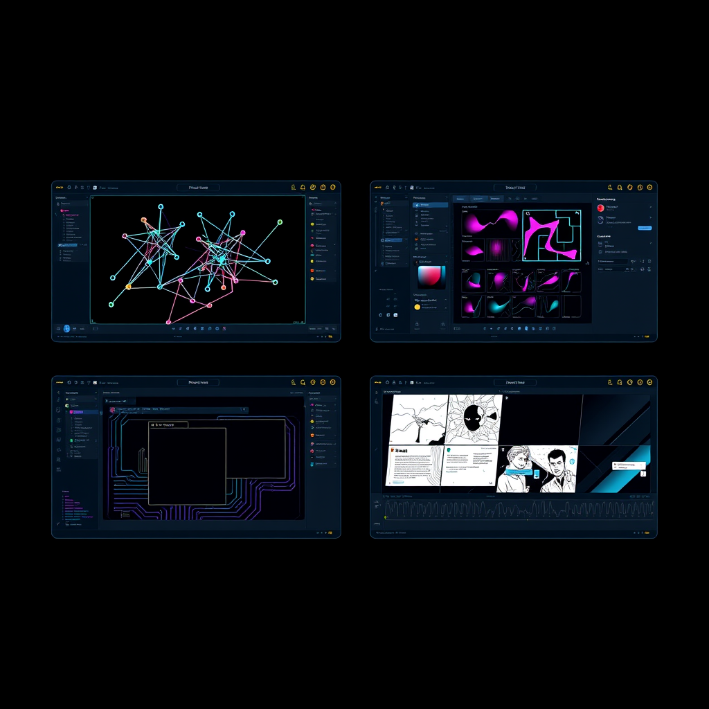

Node-based media automation
Build generation chains with prompts, lists, branches, portals, source assets, validation, and reusable function-style flow blocks.
AI post-production studio
Signal Loom combines a node-based AI Flow workspace with Image editing, Paper layout, and Video finishing. It is built for artists who need automation, asset continuity, and production controls without bouncing between disconnected tools.
Application overview
Signal Loom is structured around real project work: reusable source bins, cost-aware provider routing, generated asset history, workspace-specific panels, native packaging, and Android/desktop workflows.
Build generation chains with prompts, lists, branches, portals, source assets, validation, and reusable function-style flow blocks.
Edit raster, vector, text, masks, channels, layer effects, selections, retouch tools, generative fills, and source-linked assets.
Create pages, spreads, comic panels, captions, speech bubbles, SFX decals, export-ready page images, and raster-aligned PDFs.
Arrange source media, Paper pages, generated clips, captions, effects, preview monitors, and export-focused timeline structures.
Keep generated outputs and imported media in named bins that can move across Flow, Image, Paper, and Video without losing context.
Use flow logic for media generation and dedicated Image automation surfaces for repeated edit operations and batch processing.

Workspace model
Open a quick image edit, build a complete comic issue, organize a large generative flow, or assemble a video. The workspaces share source assets and project state while keeping their own tools, panels, and keyboard workflows.
Visual logic, provider-aware generation, model settings, verification loops, source bins, bookmarks, and reusable graph structure.
Photoshop/GIMP-style capability adapted to Signal Loom: layers, brushes, masks, effects, vectors, channels, history, and automation.
Page composition for comics, print layouts, webcomic exports, PDF evidence, speech chains, image placement, and production text controls.
Timeline assembly for generated media, storyboard pages, monitors, clip effects, render previews, and export readiness.
Mobile interface prototype
This demo is a simulated version of the Android phone interface direction. It is not the real app, but it shows the intended UI behavior: top, left, right, and bottom drawers; a floating tools palette; workspace switching; mock documents; touch navigation; and a single control to hide the interface.
Platform targets
Signal Loom is being hardened for desktop windows, Android phones, tablets, external displays, pen input, Wacom devices, keyboard shortcuts, gamepads, and Samsung DeX sessions.
Drawer-first interface, visible floating tool palettes, touch navigation, pen-focused editing, and hide-all chrome controls.
Desktop-like panels, larger canvas layouts, keyboard/mouse support, and responsive topbar and side panel behavior.
Electron app workflow with native file handling, local project storage, workspace windows, source library sync, and packaging paths.